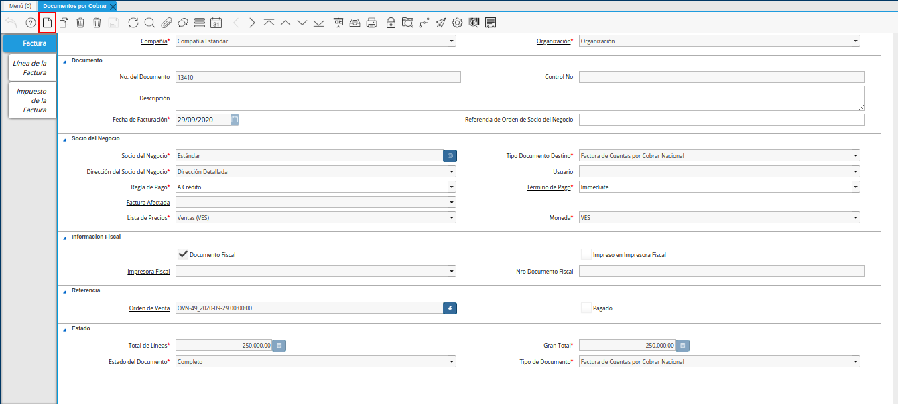

5.3.1. Registro de Documento por Cobrar¶
Ubique y seleccione en el menú de ADempiere, la carpeta “Gestión de Ventas”, luego seleccione la carpeta “Facturas de Ventas”, por último seleccione la ventana “Documentos por Cobrar”.

Imagen 1. Menú de ADempiere
Podrá visualizar la ventana “Documentos por Cobrar” con los diferentes registros de documentos de cuentas por cobrar en ADempiere.

Imagen 2. Ventana Documento por Cobrar
Seleccione el icono “Registro Nuevo”, ubicado en la barra de herramientas de ADempiere para crear un nuevo registro de factura de cuentas por cobrar.

Imagen 3. Icono Registro Nuevo
Seleccione en el campo “Organización”, la organización para la cual esta realizando el documento por cobrar.

Imagen 4. Campo Organización
En el campo “No. de Documento”, no es necesario ingresarlo en forma manual, al momento de realizar un registro, ADempiere genera un número de secuencia automáticamente para el documento, al seleccionar la opción guardar del nuevo registro de documento por cobrar.

Imagen 5. Campo Nro del Documento
En el campo “Control Nro”, no es necesario ingresarlo en forma manual, al momento de realizar un registro, ADempiere genera un número de control para el documento, al seleccionar la opción guardar del nuevo registro de documento por cobrar.

Imagen 6. Campo Control Nro
En el campo “Descripción”, introduzca una breve descripción referente al documento por cobrar que se está realizando, este campo es opcional.

Imagen 7. Campo Descripción
Introduzca en el campo “Fecha de Facturación”, la fecha en la cual se realiza la venta y facturación del producto o servicio.

Imagen 8. Campo Fecha de Facturación
Introduzca en el campo “Referencia de Orden de Socio del Negocio”, la referencia de orden del socio del negocio.

Imagen 9. Campo Referencia de Orden de Socio del Negocio
Seleccione en el campo “Socio del Negocio”, el socio del negocio cliente al cual se le realiza la venta del producto o servicio.

Imagen 10. Campo Socio del Negocio
Seleccione el tipo de documento a generar en el campo “Tipo de Documento Destino”, la selección de este define el comportamiento del documento que se está elaborando, dicho comportamiento se encuentra explicado en el documento “Tipo de Documento” elaborado por ERPyA.

Imagen 11. Campo Tipo de Documento Destino
Seleccione en el campo “Dirección del Socio del Negocio”, la dirección de localización del socio del negocio cliente al cual se le realiza la venta del producto o servicio.

Imagen 12. Campo Dirección del Socio del Negocio
Seleccione en el campo “Usuario”, el usuario de contacto con el socio del negocio cliente al cual se le realizará la venta.

Imagen 13. Campo Usuario
Seleccione en el campo “Regla de Pago”, la regla para el pago de los productos o servicios.

Imagen 14. Campo Regla de Pago
Seleccione en el campo “Término de Pago”, el término o la condición establecida para el pago del producto o servicio.

Imagen 15. Campo Término de Pago
Seleccione en el campo “Factura Afectada”, la factura afectada para ser asignada automáticamente al registro que se encuentra realizando.

Imagen 16. Campo Factura Afectada
Seleccione en el campo “Lista de Precios”, la lista de precios que será utilizada para la venta del producto o servicio.

Imagen 17. Campo Lista de Precios
Podrá visualizar en el campo “Moneda”, la moneda utilizada para la venta del producto o servicio, esta va a depender de la lista de precios seleccionada.

Imagen 18. Campo Moneda
El checklist “Documento Fiscal”, indica que el registro de documento por cobrar es considerado un documento fiscal y se utiliza para las facturas declaradas.

Imagen 19. Checklist Documento Fiscal
El checklist “Impreso en Impresora Fiscal”, indica que el registro de documento por cobrar es impreso en impresora fiscal.

Imagen 20. Checklist Impreso en Impresora Fiscal
Podrá visualizar en el campo “Impresora Fiscal”, la impresora fiscal definida para la impresión del documento que se encuentra realizando.

Imagen 21. Campo Impresora Fiscal
Podrá visualizar en el campo “Nro Documento Fiscal”, el número de documento fiscal para el documento que se encuentra realizando.

Imagen 22. Campo Nro Documento Fiscal
Note
Recuerde guardar el registro de los campos con ayuda del icono “Guardar Cambios”, ubicado en la barra de herramientas de ADempiere.
Seleccione la pestaña “Línea de la Factura” y proceda al llenado de los campos correspondientes.

Imagen 23. Pestaña Línea de la Factura
Podrá visualizar en el campo “Factura”, el número de registro al que pertenece el registro de la línea en el que se encuentra.

Imagen 24. Campo Factura
Seleccione en el campo “Producto”, el producto o servicio que será vendido al socio del negocio cliente.

Imagen 25. Campo Producto
Introduzca en el campo “Descripción”, una breve descripción referente al registro que se encuentra realizando.

Imagen 26. Campo Descripción
Seleccione en el campo “Cantidad”, la cantidad de productos o servicios que serán vendidos al socio del negocio cliente.

Imagen 27. Campo Cantidad
Seleccione en el campo “UM”, la unidad de medida del producto que será vendido al socio del negocio cliente.

Imagen 28. Campo UM
Introduzca en el campo “Precio”, el precio unitario del producto o servicio seleccionado para la venta al socio del negocio cliente.

Imagen 29. Campo Precio
El campo “Cantidad Facturada, indica la cantidad de un producto que ha sido facturado.

Imagen 30. Campo Cantidad Factura
El campo “Precio de Lista”, indica el precio de lista oficial en la moneda del documento.

Imagen 31. Campo Precio de Lista
El campo “Precio Actual”, indica el precio para un producto en la moneda fuente.

Imagen 32. Campo Precio Actual
Seleccione en el campo “Factura Afectada”, la factura afectada para ser asignada automáticamente al registro que se encuentra realizando.

Imagen 33. Campo Factura Afectada
Seleccione en el campo “Impuesto”, el impuesto correspondiente a la venta del producto o servicio seleccionado.

Imagen 34. Campo Impuesto
Podrá visualizar en el campo “Neto de Línea”, el resultado del cálculo del valor en el campo “Precio” por el valor ingresado en el campo “Cantidad”.

Imagen 35. Campo Neto de Línea
El checklist “Procesado”, indica que el registro fue procesado.

Imagen 36. Checklist Procesado
Note
Recuerde guardar el registro de los campos con ayuda del icono “Guardar Cambios”, ubicado en la barra de herramientas de ADempiere.
Seleccione la pestaña principal “Factura”, para proceder a completar el registro.

Imagen 37. Pestaña Factura
Podrá visualizar en el campo “Orden de Venta”, la orden de venta asociada al registro que se encuentra realizando.

Imagen 38. Campo Orden de Venta
El checklist “Pagado”, indica que el registro ya fue pagado.

Imagen 39. Checklist Pagado
El campo “Total de Líneas”, indica el total de todas las líneas en la moneda del documento.

Imagen 40. Campo Total de Líneas
El campo “Gran Total”, indica el total incluyendo impuestos y totales de fletes en la moneda del documento.

Imagen 41. Campo Gran Total
El campo “Estado del Documento”, indica el estado del documento en este momento, para cambiar el estado del documento utilice la opción “Procesar Factura”, desplegada por el icono “Proceso”, ubicado en la barra de herramientas de ADempiere.
Imagen 42. Campo Estado del Documento
El campo “Tipo de Documento”, indica el tipo de documento que determina la secuencia del documento o las reglas del proceso.
Imagen 43. Campo Tipo de Documento
Seleccione la opción “Procesar Factura”, desplegada por el icono “Proceso”, ubicado en la barra de herramientas de ADempiere.

Imagen 44. Opción Procesar Factura del Icono Proceso
Seleccione la acción “Completar” y la opción “OK” para completar el documento.
Imagen 45. Acción Completar y Opción OK